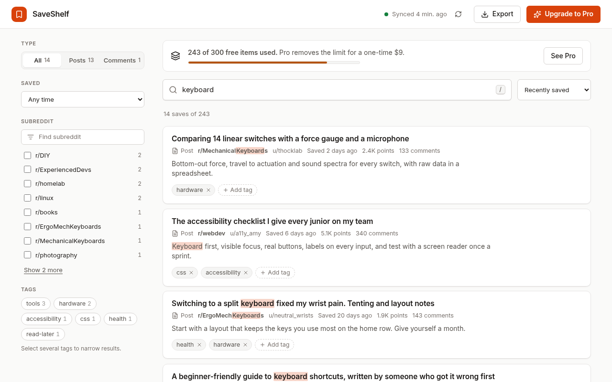
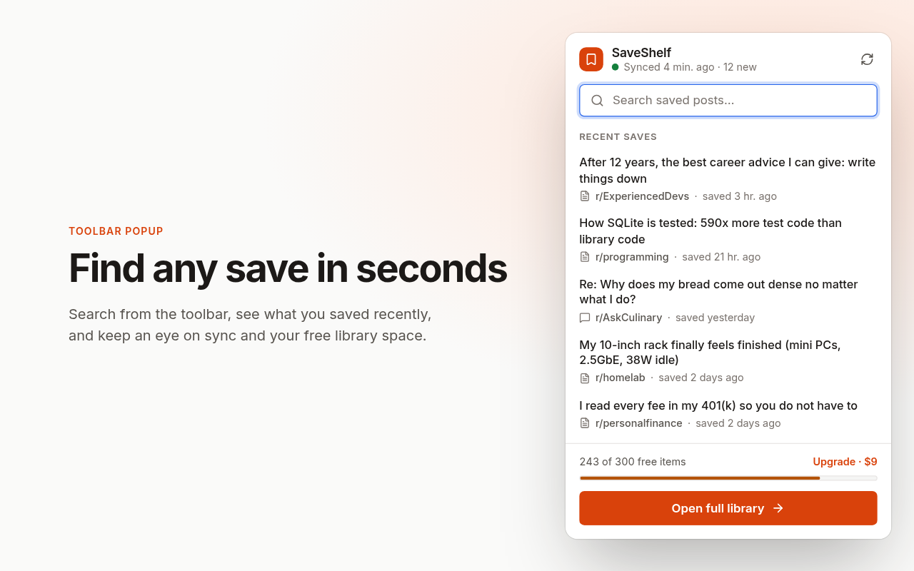
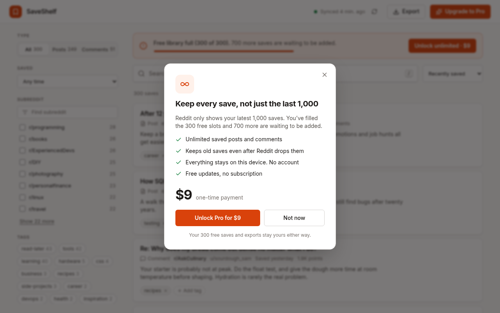

A hard 1,000 limit
Reddit only keeps your most recent 1,000 saved items. Save one more and an older one drops off the list.
Chrome extension for Reddit
Keep a private, searchable copy of every post and comment you save, stored on your own device. Search it, tag it, export it, and never lose an old save again.
Free for up to 300 saves · Pro is $9 once · No SaveShelf account needed

Reddit’s Saved page works until it doesn’t.
Reddit only keeps your most recent 1,000 saved items. Save one more and an older one drops off the list.
Finding a post you saved last year means endless scrolling. There’s no good way to filter by subreddit, date or topic.
No tags, no folders, no export. Your best finds are one scroll-lock away from disappearing.
Install it, sign in to Reddit as usual, and it quietly keeps your saves up to date.
Search titles, post text, subreddits, authors and your own tags in milliseconds.
Narrow by subreddit, posts versus comments, or when you saved it.
Add tags like read-later or recipes and filter by several at once.
Download everything, or just what you’ve filtered, as JSON or CSV.

No subscription, no SaveShelf account needed, no upsell treadmill.
$0
$9one-time
Upgrade from inside the extension when you hit 300.
Your saves are yours. They live in your browser and nowhere else.

Yes. You stay signed in to Reddit in your browser as normal. The extension reads your own saved posts and comments using that session. It never asks for your Reddit password.
Reddit only exposes your latest 1,000 saves, so that’s what the extension can import on day one. From then on it keeps everything you save, even after Reddit stops listing it.
Your library stays fully searchable and exportable. New saves are not added until you upgrade to Pro for a one-time $9.
No. Pro is a single $9 payment.
No. SaveShelf for Reddit is an independent tool. Reddit is a trademark of Reddit, Inc.
Install in one click. Your library starts building straight away.
Add to Chrome, it’s free